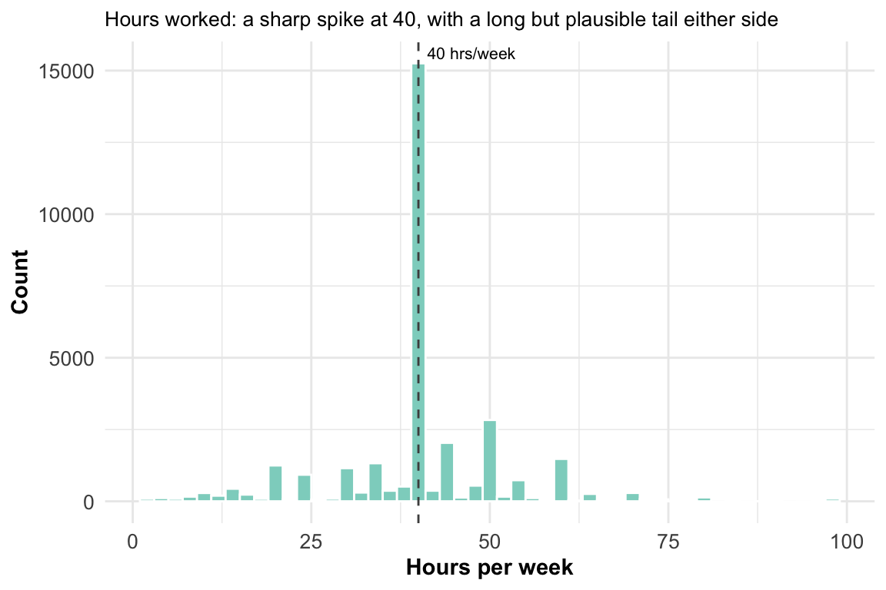
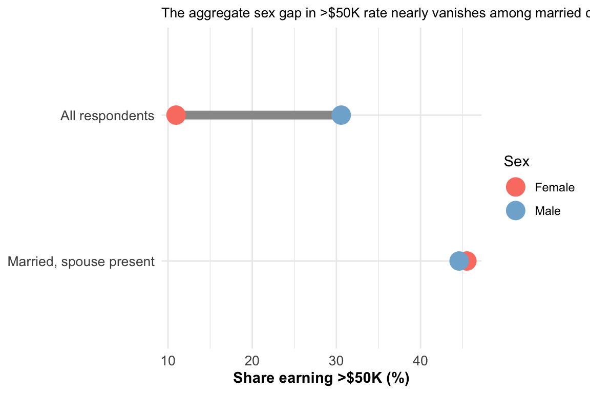

Adult (Census Income) Dataset — Exploratory Data Analysis
Author
Kwaku EDA
Published
July 22, 2026
Introduction
This dataset is a 32,561-record extract from the 1994 U.S. Census Bureau’s Current Population Survey (CPS), assembled by Barry Becker and donated to the UCI Machine Learning Repository by Ronny Kohavi and Barry Becker. Each row is one adult respondent, described by 14 demographic and employment attributes (age, education, occupation, marital status, hours worked, and so on), with a binary outcome: whether that person’s individual income exceeded $50,000 in the year surveyed. Becker restricted the extract to records with age > 16, positive adjusted gross income basis, a valid sampling weight, and hours-per-week > 0 — so this is a working-adult population, not the general public.
This analysis asks six specific questions, selected from a larger candidate pool generated by sweeping every variable in the schema against the income outcome (the full pool, with reasoning for what didn’t make the cut, is in R/candidate_questions.md):
Where, precisely, does the education–income relationship cross the point where a majority of people clear $50K?
Which occupations are most and least associated with high income — and is the 14-level raw occupation coding an arbitrary grouping, or does it already correspond to an authoritative external classification?
The dataset shows a large aggregate income gap between men and women. Is that gap uniform across the data, or concentrated in a specific subpopulation?
About 1 in 18 respondents didn’t report an employer type (workclass). Who are they, and does their condition actually resemble unemployment?
The capital-gains column has a hard ceiling at $99,999. What does that mean for anyone using the column downstream?
Is a $50,000 individual income threshold a demanding bar to clear in 1994 terms — and does that context explain why only about a quarter of this working population clears it?
The Data
Source
Collected via the CPS in 1994 and extracted/donated by Barry Becker (Silicon Graphics) later that year; first cited in Kohavi (1996), “Scaling Up the Accuracy of Naive-Bayes Classifiers: a Decision-Tree Hybrid.” The data is now three decades old. Every comparison below against a present-day intuition (e.g., “$50K sounds low today”) is explicitly reframed in 1994 terms rather than left as an implicit, misleading comparison — see “Is $50,000 a demanding bar in 1994 terms?” below.
Data dictionary (condensed from adult.names): fnlwgt is not a personal attribute — it is the CPS sampling weight, the Census Bureau’s estimate of how many people in the actual U.S. population this one record represents, controlled to independent population totals by state, Hispanic origin, race, age, and sex. It should never be treated as an ordinary numeric predictor. education and education_num are perfectly redundant (verified below) — one ordinal encoding of the other.
A direct NA check across all 15 columns comes back completely clean — but the codebook states that unknown values were encoded as the literal string "?" before publication, not as blanks. Checking for that literal specifically finds missingness concentrated in exactly three columns:
Recoded ‘?’ -> NA in data/processed/adult_clean.parquet
occupation
1843
5.66
Recoded ‘?’ -> NA in data/processed/adult_clean.parquet
native_country
583
1.79
Recoded ‘?’ -> NA in data/processed/adult_clean.parquet
Handling: "?" recoded to true NA in data/processed/adult_clean.parquet, so downstream summaries don’t silently treat “unknown” as its own factor level.
Missingness pattern.workclass and occupation are missing on almost exactly the same rows — every one of the 1,836 workclass-NA rows is also occupation-NA, and the 7 extra occupation-only-NA rows are exactly the respondents who report workclass == "Never-worked" (no employer, so naturally no occupation either). This is structural, not scattered. native_country’s missingness (583 rows), by contrast, barely overlaps with the other two (27 rows in common) and looks scattered — no identifiable pattern tying it to employment status.
All ranges are plausible for a CPS extract pre-filtered to age > 16 and hours-per-week > 0 — no negative ages, no zero-hour work weeks, no out-of-range education codes. Two values need a closer look, not because they’re implausible but because of what they represent:
capital_gain has a hard ceiling, not a natural tail. 159 of 32,561 rows (0.49% of all rows; 5.9% of the 2,712 rows with any nonzero capital gain) sit at exactly 99,999 — a spike of exact duplicates at the top of the range, not a smoothly thinning tail. That is the signature of Census-style income top-coding: a disclosure-avoidance practice where amounts above a threshold are truncated to one ceiling value rather than published exactly, to prevent re-identifying very-high-income respondents. All 159 topcoded rows carry the >50K label, which is internally consistent but also means: a model or statistic that treats 99,999 as a literal dollar figure is misreading it. The true values are unknown, only bounded below. This needs a deliberate decision before any modeling — drop, cap-and-flag, or treat topcoding as its own binary indicator — not silent inclusion as ordinary numeric data.
hours_per_week’s distribution is tighter than its full min/max range suggests. An IQR-based outlier scan flags 27.7% of rows as “outliers” — but that’s an artifact of the variable’s shape (a sharp mode at exactly 40, with a long, entirely plausible tail from 1 to 99 hours for part-time and overtime work), not a data-quality problem. Shown as a plain distribution below rather than framed as an outlier issue.
native_country (42 levels) and occupation (15 levels) are the two columns with enough categories that a raw bar/lollipop chart risks becoming unreadable or uninformative — occupation is checked against an authoritative external classification in the Visualization section below (it turns out to already match one, rather than needing to be collapsed). Verified separately that education/education_num are a strict 1-to-1 mapping (16 distinct pairs for 16 distinct education strings), confirming the redundancy noted in the data dictionary above. A duplicate-row scan also found 24 fully-duplicate records (all columns including income identical) out of 32,561 — small enough not to materially affect any statistic in this report, left in rather than silently dropped, and noted here rather than reconciled against the codebook’s own “6 duplicate/conflicting instances” figure (that figure describes the combined train+test file, not the train split alone, and the two numbers don’t cleanly reconcile — flagged as an open question rather than resolved by guessing).
Data Visualization and Exploration
Questions
Where does the education–income relationship cross 50%?
How does income vary by occupation, and does the raw 14-level coding already correspond to an authoritative external classification?
Does the aggregate sex gap in income hold within every subgroup, or is it concentrated somewhere specific?
What does the workclass-unreported population actually look like?
What does the capital_gain topcode mean for this column’s usability?
Is $50K a demanding threshold in 1994 terms?
Distributions
Show code
readRDS("../data/processed/chart_hours_dist.rds")

Hours worked concentrates overwhelmingly at the standard 40-hour week, with real (not error-driven) mass on both sides — a long-standing pattern in labor statistics, not a quirk of this sample.
Among the 2,712 respondents (8.3% of the sample) with any nonzero capital gain, the distribution thins out smoothly until the very top — where it spikes back up at exactly 99,999. That spike is not a natural continuation of the trend; it is where the Census Bureau’s disclosure-avoidance topcoding cuts in.
The relationship between education and the odds of earning over $50K is not gently increasing — it is close to flat through secondary schooling (every level from Preschool through 12th grade sits under 8%), and then rises steeply from HS-grad onward. The 50% line is crossed between a Bachelor’s degree (41.5% earn >$50K) and a Master’s degree (55.7%) — at roughly the Bachelor’s-plus-some-graduate-coursework point on this ordinal scale. Beyond that, the professional and doctoral tracks (Prof-school 73.4%, Doctorate 74.1%) cluster together near three-quarters, rather than continuing to climb — the returns to formal education taper once a research or professional credential is reached, at least as this single-year income threshold measures it.
Occupation, Already Authoritatively Classified
Before ranking occupations, it’s worth checking whether the raw 14-level occupation field is an arbitrary coding that needs collapsing, or something more principled. It turns out to be the latter: the U.S. Census Bureau’s own 1990 occupation classification scheme (documented in Census Technical Paper 65, The Relationship Between the 1990 Census and Census 2000 Industry and Occupation Classification Systems) groups all civilian employed persons into 13 major occupation groups — Executive/administrative/managerial, Professional specialty, Technicians and related support, Sales, Administrative support (clerical), Private household, Protective service, Service (except protective/household), Farming/forestry/fishing, Precision production/craft/repair, Machine operators/assemblers/inspectors, Transportation/material moving, and Handlers/equipment cleaners/laborers — plus Armed Forces as a separate category outside that civilian scheme. This dataset’s 14 occupation labels are near-verbatim abbreviations of exactly those 13 groups plus Armed Forces, a clean 1-to-1 correspondence. In other words, this field doesn’t need an external scheme applied to collapse it — it already is the Census Bureau’s own authoritative major-group taxonomy, carried through from the original 1994 CPS coding. (A coarser collapse — e.g., white-collar/service/blue-collar — would be a further aggregation layered on top of this, and worth labeling explicitly as this analysis’s own grouping rather than implying it’s independently Census-sanctioned; not applied here since the 13/14-group view is already an authoritative, decision-relevant level of detail.)
The spread is the widest of any categorical variable checked in this analysis: Executive/managerial and Professional specialty roles clear $50K roughly half the time (48.4% and 44.9%), while Private household service work sits at 0.7% — a 69-fold difference in rate between the top and bottom occupation groups. Farming-fishing and Handlers-cleaners round out the bottom alongside Other-service, all under 12%.
Anomalies and Domain-Specific Findings
The sex gap that (mostly) isn’t there once you control for marriage
Show code
readRDS("../data/processed/chart_sex_gap.rds")

Across the full dataset, men clear $50K at nearly three times the rate of women (30.6% vs. 11.0%) — a large, real gap, and the kind of aggregate figure that would normally anchor a headline. But narrowing to respondents who are married with spouse present (marital_status == "Married-civ-spouse") collapses that gap almost entirely: 44.6% of married men and 45.5% of married women clear $50K, despite wives in this subgroup working noticeably fewer average hours per week than husbands (36.7 vs. 44.1). The relationship column’s Wife category alone (n=1,566) shows a 47.5% rate — fractionally aboveHusband’s 44.9%.
This isn’t evidence the sex gap is illusory — it’s evidence the gap is unevenly distributed. The much larger population of women who are Own-child (1.1% clear $50K; mean age 24.6, mostly young adults still living at home), Unmarried (4.2%), or Not-in-family (7.3%) is what pulls the aggregate female rate down to 11.0%. Married women in this sample are not earning less than their husbands individually — the aggregate gap is concentrated almost entirely outside marriage, in a much younger, differently-situated population that a single “women earn less” headline would flatten into one number. Separately, sex shows a strong association with occupation (Cramér’s V = 0.434 — comparable in strength to marital_status’s association with income) — women in this sample are concentrated in Adm-clerical (25.5% of employed women) and Other-service (18.1%), men in Craft-repair (18.7%) and Exec-managerial (14.0%) — a plausible structural channel for the part of the gap that persists outside marriage, even without a formal decomposition here.
Is $50,000 a demanding bar in 1994 terms?
Grounding this dataset’s own 24.08% positive rate requires two things: an independent 1994-era income benchmark, and care about which income unit is being compared. The U.S. Census Bureau’s Income, Poverty, and Valuation of Noncash Benefits: 1994 (Current Population Reports P60-189) puts median household income at $32,264 in 1994. The Bureau’s Historical Income Tables (Table H-1) put the boundary of the fourth income quintile at $62,841 and the third at $40,100 — so $50,000 in household income fell inside the fourth-highest fifth of all U.S. households, roughly the top 30%.
But this dataset’s outcome is individual, not household, income — and the individual-level benchmark makes $50K look considerably more demanding, not less. The Census Bureau’s Table P-38 puts 1994 median annual earnings for full-time, year-round male workers at $30,854, and for women at $22,205 — meaning the median full-time, year-round male earner, the higher-earning group by sex, didn’t clear $31,000, let alone $50,000. Per-capita money income across the whole population (workers and non-workers) was $16,555. Against that backdrop, $50,000 in individual annual income in 1994 was a genuinely elite threshold, well above what even a typical full-time worker earned.
That reframes the dataset’s 24% positive rate: it isn’t evidence that a quarter of 1994 America cleared $50K individually — it’s the product of this dataset’s own extraction filters (working adults with hours-per-week > 0 and positive income, which already excludes retirees, students, the unemployed, and non-earners) selecting a population skewed toward the higher end of individual earners, still clearing an individually demanding bar at a meaningfully lower rate than a household-income comparison alone would suggest.
The same unit-matching caution applies to two other comparisons this dataset invites. The sex gap seen here (30.6% of men vs. 11.0% of women clear the $50K individual threshold) is not directly comparable in magnitude to the contemporaneous Census P-38 finding that women’s median full-time annual earnings were 72.0% of men’s in 1994 ($22,205 vs. $30,854) — one is a threshold-crossing-rate gap, the other a median-ratio gap, different measures of a related but distinct phenomenon; both point the same direction, but only the direction, not the magnitude, transfers. Likewise, the race gap in this data (White 25.6% vs. Black 12.4% clearing $50K) runs in the same direction as, but isn’t the same statistic as, the Census Bureau’s 1994 Black-to-White household median income ratio of 61.8% (Table H-5: $21,027 vs. $34,028) — again a household-level median-ratio figure being used only to confirm direction, not magnitude, against this dataset’s individual-level threshold-crossing figures. One caution worth naming plainly: a White/Black comparison alone would understate how much this dataset resists a simple “White vs. everyone else” binary. Respondents recorded as Asian-Pac-Islander clear $50K at 26.6% — fractionally above the White rate of 25.6% — while Amer-Indian-Eskimo (11.6%) and Other (9.2%) sit closer to the Black rate. A framing that collapses race into “White vs. non-White” would misrepresent this specific dataset’s own pattern.
Unreported employer type is not the same as not working
The natural first guess for “employer type unreported” is “not currently in the labor force” — but this dataset’s own extraction criteria already required hours-per-week > 0 for every row, so a genuinely non-working respondent could not appear at all. Checked directly: the 1,836 workclass-unreported respondents report a mean of 31.9 hours per week, and not one of them reports zero hours. They are working real hours and either declined to specify, or the survey could not resolve, what kind of employer they have. Their income profile is closer to Never-worked/Without-pay (both near 0%, though on tiny samples of 7 and 14) than to Private (21.9%) — a distinct labor-market position, not simply “unemployed,” and one worth carrying as its own category rather than dropping or imputing it into Private by default in any downstream use.
Conclusion
This dataset is a genuinely informative snapshot of the U.S. working population in 1994, but three things need to stay attached to any claim drawn from it. First, the outcome variable is individual, not household, income — a $50,000 individual threshold is a much higher bar than a $50,000 household threshold, and every comparison to a household-income statistic needs that unit named explicitly rather than assumed away. Second, several columns carry Census-methodology artifacts that look like ordinary data until checked directly: capital_gain’s topcoding at 99,999, fnlwgt’s status as a sampling weight rather than a personal attribute, and workclass’s structurally (not randomly) missing values. Any of these treated naively — as literal dollar amounts, an ordinary numeric feature, or random missingness safe to drop — would produce a plausible-looking but wrong analysis. Third, the data is three decades old: dollar thresholds, occupational structure, and labor-force participation have all shifted since 1994, so any claim about “what predicts income” from this data describes 1994, not the present, unless restated with that caveat.
What the data does say clearly: education is the single steepest, most monotonic predictor of the $50K threshold in this sample, crossing from a minority to a majority outcome specifically between a Bachelor’s and a Master’s degree. The often-cited sex income gap is real in aggregate but concentrated almost entirely outside marriage — a pattern easy to miss if the analysis stops at the aggregate sex breakdown and never conditions on relationship or marital_status. And a meaningful slice of the “missing data” in this dataset (workclass/occupation) is not missing at random — it marks a specific, lower-earning-but-still-working population that a careless drop-the-NAs approach would silently discard rather than characterize.
Analysis Approach (Next Phase)
A natural next step is a classification model predicting the >50K label, using this EDA’s findings to inform feature handling — treating capital_gain’s topcode as a flag rather than a literal value, deciding how to encode workclass’s structural missingness (its own category, most likely, given the analysis above), and choosing whether fnlwgt is used at all given its role as a sampling weight rather than a predictor. That modeling work, and its own results reporting, is out of scope for this document.
Technical Notes
Reproducibility
Environment: R 4.6.1, packages pinned in renv.lock (renv::restore() to match). Report rendered with the Quarto CLI bundled inside RStudio (RStudio.app/Contents/Resources/app/quarto/bin/quarto) — no standalone Quarto install required.
To reproduce: run R/01_data_quality.R, R/02_general_eda.R, R/03_targeted_followups.R, R/04_wife_anomaly.R, R/06_quality_tables.R, then R/05_charts.R (in that order — the later scripts depend on data/processed/adult_clean.parquet from the first) to regenerate everything in data/processed/, then render this file. Run R/07_export_deliverables.R afterward to refresh the standalone exports in reports/figures/ and reports/tables/.
References
U.S. Census Bureau. Income, Poverty, and Valuation of Noncash Benefits: 1994. Current Population Reports, Series P60-189, April 1996. https://www.census.gov/library/publications/1996/demo/p60-189.html — median household income, 1994.
U.S. Census Bureau. Historical Income Tables: Households, Table H-1, “Income Limits for Each Fifth and Top 5 Percent of All Households.” https://www.census.gov/data/tables/time-series/demo/income-poverty/historical-income-households.html — 1994 household income quintile breakpoints.
U.S. Census Bureau. Historical Income Tables: People, Table P-38, “Full-Time, Year-Round All Workers by Median Earnings and Sex.” https://www.census.gov/data/tables/time-series/demo/income-poverty/historical-income-people.html — 1994 median individual annual earnings by sex.
U.S. Census Bureau. Historical Income Tables: Households, Table H-5, “Race and Hispanic Origin of Householder — Households by Median and Mean Income.” https://www.census.gov/data/tables/time-series/demo/income-poverty/historical-income-households.html — 1994 household median income by race.
U.S. Census Bureau. The Relationship Between the 1990 Census and Census 2000 Industry and Occupation Classification Systems, Technical Paper 65, 2003, Table 7. https://www.census.gov/library/publications/2003/demo/tp-65.html — 1990 Census 13-major-group occupation classification.
U.S. Census Bureau. Current Population Survey Technical Documentation, “Weighting.” https://www.census.gov/programs-surveys/cps/technical-documentation/methodology/weighting.html — independent confirmation of CPS final-weight (fnlwgt) methodology.